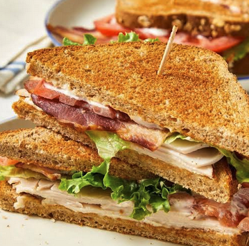

Pizza
Home

Description
A double-decker diner classic built with three slices of toasted bread, layered with turkey, crispy bacon, lettuce, tomato, and creamy mayonnaise.
Ingredients
- 3 slices of white or sourdough bread
- 3-4 oz thinly sliced deli turkey breast
- 3 strips of thick-cut bacon
- 2 slices of ripe tomato
- 1-2 leaves of crisp iceberg or romaine lettuce
- 2 tbsp mayonnaise
- Salt and black pepper to taste
Steps
- 1.Crisp the bacon:8-10 mins.Cook the bacon strips in a skillet over medium heat until they are fully crisp. Transfer them to a paper-towel-lined plate to drain.
- 2.Toast and prep the bread:3 mins.Toast all three slices of bread until they are golden brown. Lay them out flat and spread a thin layer of mayonnaise across one side of each slice.
- 3.Build the first tier:2 mins.On the first slice of toast (mayo-side up), layer the crisp lettuce leaves followed by the sliced turkey breast. Place the second slice of toast directly on top of the turkey (mayo-side up).
- 4.Build the second tier:2 mins.Layer the sliced tomatoes onto the middle toast, season them with a pinch of salt and pepper, and top them with the crispy bacon strips. Cap the sandwich with the third slice of toast (mayo-side down).
- 5.Secure and slice:1 min.Insert four toothpicks into the midpoints of each outer edge. Cut the sandwich diagonally across both axes to form four neat, self-contained triangular quarters.